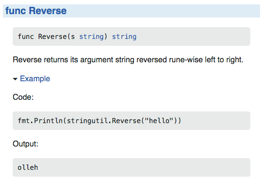
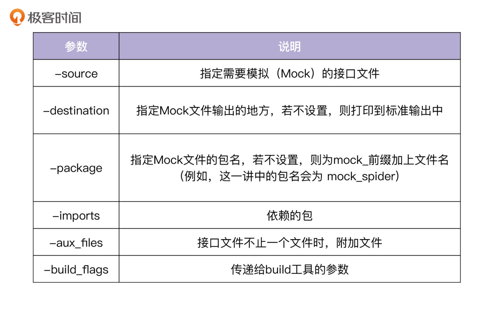
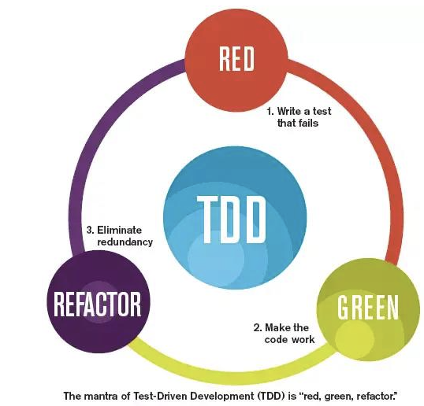
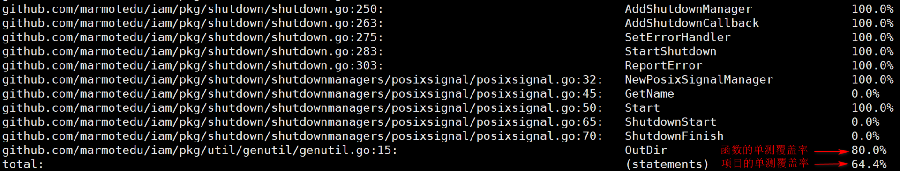
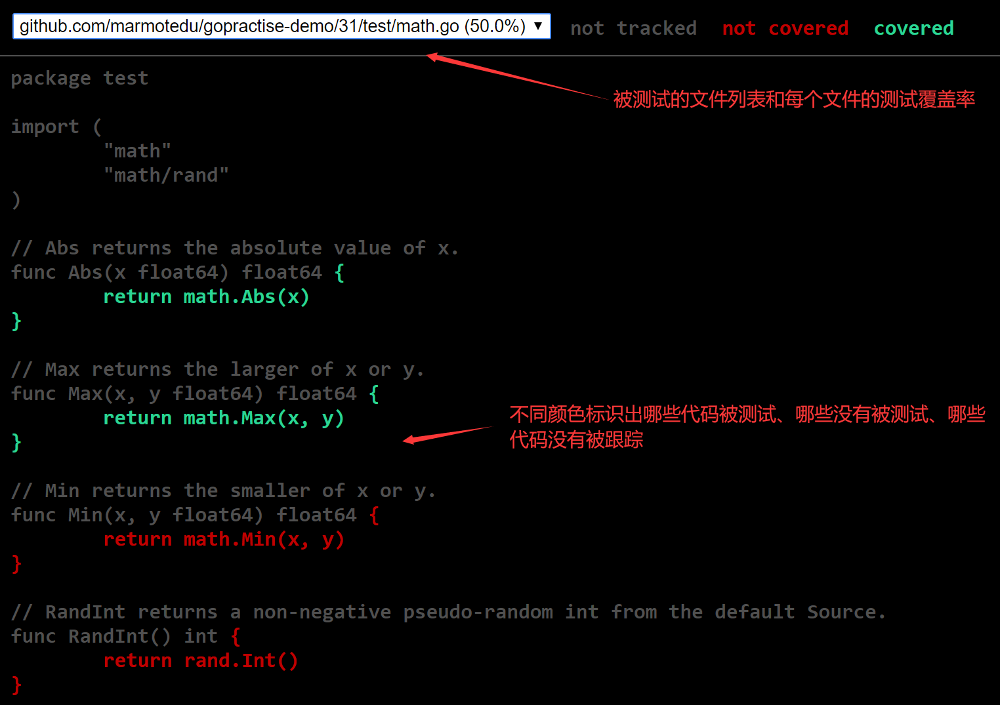

- 00 开篇词 从 0 开始搭建一个企业级 Go 应用.md.html
- 01 IAM系统概述：我们要实现什么样的 Go 项目？.md.html
- 02 环境准备：如何安装和配置一个基本的 Go 开发环境？.md.html
- 03 项目部署：如何快速部署 IAM 系统？.md.html
- 04 规范设计（上）：项目开发杂乱无章，如何规范？.md.html
- 05 规范设计（下）：commit 信息风格迥异、难以阅读，如何规范？.md.html
- 06 目录结构设计：如何组织一个可维护、可扩展的代码目录？.md.html
- 07 工作流设计：如何设计合理的多人开发模式？.md.html
- 08 研发流程设计（上）：如何设计 Go 项目的开发流程？.md.html
- 09 研发流程设计（下）：如何管理应用的生命周期？.md.html
- 10 设计方法：怎么写出优雅的 Go 项目？.md.html
- 11 设计模式：Go常用设计模式概述.md.html
- 12 API 风格（上）：如何设计RESTful API？.md.html
- 13 API 风格（下）：RPC API介绍.md.html
- 14 项目管理：如何编写高质量的Makefile？.md.html
- 15 研发流程实战：IAM项目是如何进行研发流程管理的？.md.html
- 16 代码检查：如何进行静态代码检查？.md.html
- 17 API 文档：如何生成 Swagger API 文档 ？.md.html
- 18 错误处理（上）：如何设计一套科学的错误码？.md.html
- 19 错误处理（下）：如何设计错误包？.md.html
- 20 日志处理（上）：如何设计日志包并记录日志？.md.html
- 21 日志处理（下）：手把手教你从 0 编写一个日志包.md.html
- 22 应用构建三剑客：Pflag、Viper、Cobra 核心功能介绍.md.html
- 23 应用构建实战：如何构建一个优秀的企业应用框架？.md.html
- 24 Web 服务：Web 服务核心功能有哪些，如何实现？.md.html
- 25 认证机制：应用程序如何进行访问认证？.md.html
- 26 IAM项目是如何设计和实现访问认证功能的？.md.html
- 27 权限模型：5大权限模型是如何进行资源授权的？.md.html
- 28 控制流（上）：通过iam-apiserver设计，看Web服务的构建.md.html
- 29 控制流（下）：iam-apiserver服务核心功能实现讲解.md.html
- 30 ORM：CURD 神器 GORM 包介绍及实战.md.html
- 31 数据流：通过iam-authz-server设计，看数据流服务的设计.md.html
- 32 数据处理：如何高效处理应用程序产生的数据？.md.html
- 33 SDK 设计（上）：如何设计出一个优秀的 Go SDK？.md.html
- 34 SDK 设计（下）：IAM项目Go SDK设计和实现.md.html
- 35 效率神器：如何设计和实现一个命令行客户端工具？.md.html
- 36 代码测试（上）：如何编写 Go 语言单元测试和性能测试用例？.md.html
- 37 代码测试（下）：Go 语言其他测试类型及 IAM 测试介绍.md.html
- 38 性能分析（上）：如何分析 Go 语言代码的性能？.md.html
- 39 性能分析（下）：API Server性能测试和调优实战.md.html
- 40 软件部署实战（上）：部署方案及负载均衡、高可用组件介绍.md.html
- 41 软件部署实战（中）：IAM 系统生产环境部署实战.md.html
- 42 软件部署实战（下）：IAM系统安全加固、水平扩缩容实战.md.html
- 43 技术演进（上）：虚拟化技术演进之路.md.html
- 44 技术演进（下）：软件架构和应用生命周期技术演进之路.md.html
- 45 基于Kubernetes的云原生架构设计.md.html
- 46 如何制作Docker镜像？.md.html
- 47 如何编写Kubernetes资源定义文件？.md.html
- 48 IAM 容器化部署实战.md.html
- 49 服务编排（上）：Helm服务编排基础知识.md.html
- 50 服务编排（下）：基于Helm的服务编排部署实战.md.html
- 51 基于 GitHub Actions 的 CI 实战.md.html
- 特别放送 Go Modules依赖包管理全讲.md.html
- 特别放送 Go Modules实战.md.html
- 特别放送 IAM排障指南.md.html
- 特别放送 分布式作业系统设计和实现.md.html
- 特别放送 给你一份Go项目中最常用的Makefile核心语法.md.html
- 特别放送 给你一份清晰、可直接套用的Go编码规范.md.html
- 直播加餐 如何从小白进阶成 Go 语言专家？.md.html
- 结束语 如何让自己的 Go 研发之路走得更远？.md.html
- 捐赠
37 代码测试（下）：Go 语言其他测试类型及 IAM 测试介绍
你好，我是孔令飞。
上一讲，我介绍了Go中的两类测试：单元测试和性能测试。在Go中，还有一些其他的测试类型和测试方法，值得我们去了解和掌握。此外，IAM项目也编写了大量测试用例，这些测试用例使用了不同的编写方法，你可以通过学习IAM的测试用例来验证你学到的测试知识。
今天，我就来介绍下Go 语言中的其他测试类型：示例测试、TestMain函数、Mock测试、Fake测试等，并且介绍下IAM项目是如何编写和运行测试用例的。
示例测试
示例测试以Example开头，没有输入和返回参数，通常保存在example_test.go文件中。示例测试可能包含以Output:或者Unordered output:开头的注释，这些注释放在函数的结尾部分。Unordered output:开头的注释会忽略输出行的顺序。
执行go test命令时，会执行这些示例测试，并且go test会将示例测试输出到标准输出的内容，跟注释作对比（比较时将忽略行前后的空格）。如果相等，则示例测试通过测试；如果不相等，则示例测试不通过测试。下面是一个示例测试（位于example_test.go文件中）：
func ExampleMax() {
fmt.Println(Max(1, 2))
// Output:
// 2
}
执行go test命令，测试ExampleMax示例测试：
$ go test -v -run='Example.*'
=== RUN ExampleMax
--- PASS: ExampleMax (0.00s)
PASS
ok github.com/marmotedu/gopractise-demo/31/test 0.004s
可以看到ExampleMax测试通过。这里测试通过是因为fmt.Println(Max(1, 2))向标准输出输出了2，跟// Output:后面的2一致。
当示例测试不包含Output:或者Unordered output:注释时，执行go test只会编译这些函数，但不会执行这些函数。
示例测试命名规范
示例测试需要遵循一些命名规范，因为只有这样，Godoc才能将示例测试和包级别的标识符进行关联。例如，有以下示例测试（位于example_test.go文件中）：
package stringutil_test
import (
"fmt"
"github.com/golang/example/stringutil"
)
func ExampleReverse() {
fmt.Println(stringutil.Reverse("hello"))
// Output: olleh
}
Godoc将在Reverse函数的文档旁边提供此示例，如下图所示：

示例测试名以Example开头，后面可以不跟任何字符串，也可以跟函数名、类型名或者类型_方法名，中间用下划线_连接，例如：
func Example() { ... } // 代表了整个包的示例
func ExampleF() { ... } // 函数F的示例
func ExampleT() { ... } // 类型T的示例
func ExampleT_M() { ... } // 方法T_M的示例
当某个函数/类型/方法有多个示例测试时，可以通过后缀来区分，后缀必须以小写字母开头，例如：
func ExampleReverse()
func ExampleReverse_second()
func ExampleReverse_third()
大型示例
有时候，我们需要编写一个大型的示例测试，这时候我们可以编写一个整文件的示例（whole file example），它有这几个特点：文件名以_test.go结尾；只包含一个示例测试，文件中没有单元测试函数和性能测试函数；至少包含一个包级别的声明；当展示这类示例测试时，godoc会直接展示整个文件。例如：
package sort_test
import (
"fmt"
"sort"
)
type Person struct {
Name string
Age int
}
func (p Person) String() string {
return fmt.Sprintf("%s: %d", p.Name, p.Age)
}
// ByAge implements sort.Interface for []Person based on
// the Age field.
type ByAge []Person
func (a ByAge) Len() int { return len(a) }
func (a ByAge) Swap(i, j int) { a[i], a[j] = a[j], a[i] }
func (a ByAge) Less(i, j int) bool { return a[i].Age < a[j].Age }
func Example() {
people := []Person{
{"Bob", 31},
{"John", 42},
{"Michael", 17},
{"Jenny", 26},
}
fmt.Println(people)
sort.Sort(ByAge(people))
fmt.Println(people)
// Output:
// [Bob: 31 John: 42 Michael: 17 Jenny: 26]
// [Michael: 17 Jenny: 26 Bob: 31 John: 42]
}
一个包可以包含多个whole file example，一个示例一个文件，例如example_interface_test.go、example_keys_test.go、example_search_test.go等。
TestMain函数
有时候，我们在做测试的时候，可能会在测试之前做些准备工作，例如创建数据库连接等；在测试之后做些清理工作，例如关闭数据库连接、清理测试文件等。这时，我们可以在_test.go文件中添加TestMain函数，其入参为*testing.M。
TestMain是一个特殊的函数（相当于main函数），测试用例在执行时，会先执行TestMain函数，然后可以在TestMain中调用m.Run()函数执行普通的测试函数。在m.Run()函数前面我们可以编写准备逻辑，在m.Run()后面我们可以编写清理逻辑。
我们在示例测试文件math_test.go中添加如下TestMain函数：
func TestMain(m *testing.M) {
fmt.Println("do some setup")
m.Run()
fmt.Println("do some cleanup")
}
执行go test，输出如下：
$ go test -v
do some setup
=== RUN TestAbs
--- PASS: TestAbs (0.00s)
...
=== RUN ExampleMax
--- PASS: ExampleMax (0.00s)
PASS
do some cleanup
ok github.com/marmotedu/gopractise-demo/31/test 0.006s
在执行测试用例之前，打印了do some setup，在测试用例运行完成之后，打印了do some cleanup。
IAM项目的测试用例中，使用TestMain函数在执行测试用例前连接了一个fake数据库，代码如下（位于internal/apiserver/service/v1/user_test.go文件中）：
func TestMain(m *testing.M) {
fakeStore, _ := fake.NewFakeStore()
store.SetClient(fakeStore)
os.Exit(m.Run())
}
单元测试、性能测试、示例测试、TestMain函数是go test支持的测试类型。此外，为了测试在函数内使用了Go Interface的函数，我们还延伸出了Mock测试和Fake测试两种测试类型。
Mock测试
一般来说，单元测试中是不允许有外部依赖的，那么也就是说，这些外部依赖都需要被模拟。在Go中，一般会借助各类Mock工具来模拟一些依赖。
GoMock是由Golang官方开发维护的测试框架，实现了较为完整的基于interface的Mock功能，能够与Golang内置的testing包良好集成，也能用于其他的测试环境中。GoMock测试框架包含了GoMock包和mockgen工具两部分，其中GoMock包用来完成对象生命周期的管理，mockgen工具用来生成interface对应的Mock类源文件。下面，我来分别详细介绍下GoMock包和mockgen工具，以及它们的使用方法。
安装GoMock
要使用GoMock，首先需要安装GoMock包和mockgen工具，安装方法如下:
$ go get github.com/golang/mock/gomock
$ go install github.com/golang/mock/mockgen
下面，我通过一个获取当前Golang最新版本的例子，来给你演示下如何使用GoMock。示例代码目录结构如下（目录下的代码见gomock）：
tree .
.
├── go_version.go
├── main.go
└── spider
└── spider.go
spider.go文件中定义了一个Spider接口，spider.go代码如下：
package spider
type Spider interface {
GetBody() string
}
Spider接口中的GetBody方法可以抓取https://golang.org首页的Build version字段，来获取Golang的最新版本。
我们在go_version.go文件中，调用Spider接口的GetBody方法，go_version.go代码如下：
package gomock
import (
"github.com/marmotedu/gopractise-demo/gomock/spider"
)
func GetGoVersion(s spider.Spider) string {
body := s.GetBody()
return body
}
GetGoVersion函数直接返回表示版本的字符串。正常情况下，我们会写出如下的单元测试代码：
func TestGetGoVersion(t *testing.T) {
v := GetGoVersion(spider.CreateGoVersionSpider())
if v != "go1.8.3" {
t.Error("Get wrong version %s", v)
}
}
上面的测试代码，依赖spider.CreateGoVersionSpider()返回一个实现了Spider接口的实例（爬虫）。但很多时候，spider.CreateGoVersionSpider()爬虫可能还没有实现，或者在单元测试环境下不能运行（比如，在单元测试环境中连接数据库），这时候TestGetGoVersion测试用例就无法执行。
那么，如何才能在这种情况下运行TestGetGoVersion测试用例呢？这时候，我们就可以通过Mock工具，Mock一个爬虫实例。接下来我讲讲具体操作。
首先，用 GoMock 提供的mockgen工具，生成要 Mock 的接口的实现，我们在gomock目录下执行以下命令：
$ mockgen -destination spider/mock/mock_spider.go -package spider github.com/marmotedu/gopractise-demo/gomock/spider Spider
上面的命令会在spider/mock目录下生成mock_spider.go文件：
$ tree .
.
├── go_version.go
├── go_version_test.go
├── go_version_test_traditional_method.go~
└── spider
├── mock
│ └── mock_spider.go
└── spider.go
mock_spider.go文件中，定义了一些函数/方法，可以支持我们编写TestGetGoVersion测试函数。这时候，我们的单元测试代码如下（见go_version_test.go文件）：
package gomock
import (
"testing"
"github.com/golang/mock/gomock"
spider "github.com/marmotedu/gopractise-demo/gomock/spider/mock"
)
func TestGetGoVersion(t *testing.T) {
ctrl := gomock.NewController(t)
defer ctrl.Finish()
mockSpider := spider.NewMockSpider(ctrl)
mockSpider.EXPECT().GetBody().Return("go1.8.3")
goVer := GetGoVersion(mockSpider)
if goVer != "go1.8.3" {
t.Errorf("Get wrong version %s", goVer)
}
}
这一版本的TestGetGoVersion通过GoMock， Mock了一个Spider接口，而不用去实现一个Spider接口。这就大大降低了单元测试用例编写的复杂度。通过Mock，很多不能测试的函数也变得可测试了。
通过上面的测试用例，我们可以看到，GoMock 和上一讲介绍的testing单元测试框架可以紧密地结合起来工作。
mockgen工具介绍
上面，我介绍了如何使用 GoMock 编写单元测试用例。其中，我们使用到了mockgen工具来生成 Mock代码，mockgen工具提供了很多有用的功能，这里我来详细介绍下。
mockgen工具是 GoMock 提供的，用来Mock一个Go接口。它可以根据给定的接口，来自动生成Mock代码。这里，有两种模式可以生成Mock代码，分别是源码模式和反射模式。
- 源码模式
如果有接口文件，则可以通过以下命令来生成Mock代码：
$ mockgen -destination spider/mock/mock_spider.go -package spider -source spider/spider.go
上面的命令，Mock了spider/spider.go文件中定义的Spider接口，并将Mock代码保存在spider/mock/mock_spider.go文件中，文件的包名为spider。
mockgen工具的参数说明见下表：

- 反射模式
此外，mockgen工具还支持通过使用反射程序来生成 Mock 代码。它通过传递两个非标志参数，即导入路径和逗号分隔的接口列表来启用，其他参数和源码模式共用，例如：
$ mockgen -destination spider/mock/mock_spider.go -package spider github.com/marmotedu/gopractise-demo/gomock/spider Spider
通过注释使用mockgen
如果有多个文件，并且分散在不同的位置，那么我们要生成Mock文件的时候，需要对每个文件执行多次mockgen命令（这里假设包名不相同）。这种操作还是比较繁琐的，mockgen还提供了一种通过注释生成Mock文件的方式，此时需要借助go generate工具。
在接口文件的代码中，添加以下注释（具体代码见spider.go文件）：
//go:generate mockgen -destination mock_spider.go -package spider github.com/cz-it/blog/blog/Go/testing/gomock/example/spider Spider
这时候，我们只需要在gomock目录下，执行以下命令，就可以自动生成Mock代码：
$ go generate ./...
使用Mock代码编写单元测试用例
生成了Mock代码之后，我们就可以使用它们了。这里我们结合testing来编写一个使用了Mock代码的单元测试用例。
首先，需要在单元测试代码里创建一个Mock控制器：
ctrl := gomock.NewController(t)
将*testing.T传递给GoMock ，生成一个Controller对象，该对象控制了整个Mock的过程。在操作完后，还需要进行回收，所以一般会在NewController后面defer一个Finish，代码如下：
defer ctrl.Finish()
然后，就可以调用Mock的对象了：
mockSpider := spider.NewMockSpider(ctrl)
这里的spider是mockgen命令里面传递的包名，后面是NewMockXxxx格式的对象创建函数，Xxx是接口名。这里，我们需要传递控制器对象进去，返回一个Mock实例。
接着，有了Mock实例，我们就可以调用其断言方法EXPECT()了。
gomock采用了链式调用法，通过.连接函数调用，可以像链条一样连接下去。例如：
mockSpider.EXPECT().GetBody().Return("go1.8.3")
Mock一个接口的方法，我们需要Mock该方法的入参和返回值。我们可以通过参数匹配来Mock入参，通过Mock实例的 Return 方法来Mock返回值。下面，我们来分别看下如何指定入参和返回值。
先来看如何指定入参。如果函数有参数，我们可以使用参数匹配来指代函数的参数，例如：
mockSpider.EXPECT().GetBody(gomock.Any(), gomock.Eq("admin")).Return("go1.8.3")
gomock支持以下参数匹配：
- gomock.Any()，可以用来表示任意的入参。
- gomock.Eq(value)，用来表示与 value 等价的值。
- gomock.Not(value)，用来表示非 value 以外的值。
- gomock.Nil()，用来表示 None 值。
接下来，我们看如何指定返回值。
EXPECT()得到Mock的实例，然后调用Mock实例的方法，该方法返回第一个Call对象，然后可以对其进行条件约束，比如使用Mock实例的 Return 方法约束其返回值。Call对象还提供了以下方法来约束Mock实例：
func (c *Call) After(preReq *Call) *Call // After声明调用在preReq完成后执行
func (c *Call) AnyTimes() *Call // 允许调用次数为 0 次或更多次
func (c *Call) Do(f interface{}) *Call // 声明在匹配时要运行的操作
func (c *Call) MaxTimes(n int) *Call // 设置最大的调用次数为 n 次
func (c *Call) MinTimes(n int) *Call // 设置最小的调用次数为 n 次
func (c *Call) Return(rets ...interface{}) *Call // // 声明模拟函数调用返回的值
func (c *Call) SetArg(n int, value interface{}) *Call // 声明使用指针设置第 n 个参数的值
func (c *Call) Times(n int) *Call // 设置调用次数为 n 次
上面列出了多个 Call 对象提供的约束方法，接下来我会介绍3个常用的约束方法：指定返回值、指定执行次数和指定执行顺序。
- 指定返回值
我们可以提供调用Call的Return函数，来指定接口的返回值，例如：
mockSpider.EXPECT().GetBody().Return("go1.8.3")
- 指定执行次数
有时候，我们需要指定函数执行多少次，例如：对于接受网络请求的函数，计算其执行了多少次。我们可以通过Call的Times函数来指定执行次数：
mockSpider.EXPECT().Recv().Return(nil).Times(3)
上述代码，执行了三次Recv函数，这里gomock还支持其他的执行次数限制：
- AnyTimes()，表示执行0到多次。
- MaxTimes(n int)，表示如果没有设置，最多执行n次。
- MinTimes(n int)，表示如果没有设置，最少执行n次。
- 指定执行顺序
有时候，我们还要指定执行顺序，比如要先执行 Init 操作，然后才能执行Recv操作：
initCall := mockSpider.EXPECT().Init()
mockSpider.EXPECT().Recv().After(initCall)
最后，我们可以使用go test来测试使用了Mock代码的单元测试代码：
$ go test -v
=== RUN TestGetGoVersion
--- PASS: TestGetGoVersion (0.00s)
PASS
ok github.com/marmotedu/gopractise-demo/gomock 0.002s
Fake测试
在Go项目开发中，对于比较复杂的接口，我们还可以Fake一个接口实现，来进行测试。所谓Fake测试，其实就是针对接口实现一个假（fake）的实例。至于如何实现Fake实例，需要你根据业务自行实现。例如：IAM项目中iam-apiserver组件就实现了一个fake store，代码见fake目录。因为这一讲后面的IAM项目测试实战部分有介绍，所以这里不再展开讲解。
何时编写和执行单元测试用例？
上面，我介绍了Go代码测试的基础知识，这里我再来分享下在做测试时一个比较重要的知识点：何时编写和执行单元测试用例。
编码前：TDD

Test-Driven Development，也就是测试驱动开发，是敏捷开发的⼀项核心实践和技术，也是⼀种设计方法论。简单来说，TDD原理就是：开发功能代码之前，先编写测试用例代码，然后针对测试用例编写功能代码，使其能够通过。这样做的好处在于，通过测试的执行代码肯定满足需求，而且有助于面向接口编程，降低代码耦合，也极大降低了bug的出现几率。
然而，TDD的坏处也显而易见：由于测试用例是在进行代码设计之前写的，很有可能限制开发者对代码的整体设计；并且，由于TDD对开发⼈员要求非常高，体现的思想跟传统开发思维也不⼀样，因此实施起来比较困难；此外，因为要先编写测试用例，TDD也可能会影响项目的研发进度。所以，在客观情况不满足的情况下，不应该盲目追求对业务代码使用TDD的开发模式。
与编码同步进行：增量
及时为增量代码写单测是一种良好的习惯。一方面是因为，此时我们对需求有一定的理解，能够更好地写出单元测试来验证正确性。并且，在单测阶段就发现问题，而不是等到联调测试中才发现，修复的成本也是最小的。
另一方面，在写单测的过程中，我们也能够反思业务代码的正确性、合理性，推动我们在实现的过程中更好地反思代码的设计，并及时调整。
编码后：存量
在完成业务需求后，我们可能会遇到这种情况：因为上线时间比较紧张、没有单测相关规划，开发阶段只手动测试了代码是否符合功能。
如果这部分存量代码出现较大的新需求，或者维护已经成为问题，需要大规模重构，这正是推动补全单测的好时机。为存量代码补充上单测，一方面能够推进重构者进一步理解原先的逻辑，另一方面也能够增强重构者重构代码后的信心，降低风险。
但是，补充存量单测可能需要再次回忆理解需求和逻辑设计等细节，而有时写单测的人并不是原编码的设计者，所以编码后编写和执行单元测试用例也有一定的不足。
测试覆盖率
我们写单元测试的时候应该想得很全面，能够覆盖到所有的测试用例，但有时也会漏过一些 case，Go提供了cover工具来统计测试覆盖率。具体可以分为两大步骤。
第一步，生成测试覆盖率数据：
$ go test -coverprofile=coverage.out
do some setup
PASS
coverage: 40.0% of statements
do some cleanup
ok github.com/marmotedu/gopractise-demo/test 0.003s
上面的命令在当前目录下生成了coverage.out覆盖率数据文件。

第二步，分析覆盖率文件：
$ go tool cover -func=coverage.out
do some setup
PASS
coverage: 40.0% of statements
do some cleanup
ok github.com/marmotedu/gopractise-demo/test 0.003s
[colin@dev test]$ go tool cover -func=coverage.out
github.com/marmotedu/gopractise-demo/test/math.go:9: Abs 100.0%
github.com/marmotedu/gopractise-demo/test/math.go:14: Max 100.0%
github.com/marmotedu/gopractise-demo/test/math.go:19: Min 0.0%
github.com/marmotedu/gopractise-demo/test/math.go:24: RandInt 0.0%
github.com/marmotedu/gopractise-demo/test/math.go:29: Floor 0.0%
total: (statements) 40.0%
在上述命令的输出中，我们可以查看到哪些函数没有测试，哪些函数内部的分支没有测试完全。cover工具会根据被执行代码的行数与总行数的比例计算出覆盖率。可以看到，Abs和Max函数的测试覆盖率为100%，Min和RandInt的测试覆盖率为0。
我们还可以使用go tool cover -html生成HTML格式的分析文件，可以更加清晰地展示代码的测试情况：
$ go tool cover -html=coverage.out -o coverage.html
上述命令会在当前目录下生成一个coverage.html文件，用浏览器打开coverage.html文件，可以更加清晰地看到代码的测试情况，如下图所示：

通过上图，我们可以知道红色部分的代码没有被测试到，可以让我们接下来有针对性地添加测试用例，而不是一头雾水，不知道需要为哪些代码编写测试用例。
在Go项目开发中，我们往往会把测试覆盖率作为代码合并的一个强制要求，所以需要在进行代码测试时，同时生成代码覆盖率数据文件。在进行代码测试时，可以通过分析该文件，来判断我们的代码测试覆盖率是否满足要求，如果不满足则代码测试失败。
IAM项目测试实战
接下来，我来介绍下IAM项目是如何编写和运行测试用例的，你可以通过IAM项目的测试用例，加深对上面内容的理解。
IAM项目是如何运行测试用例的？
首先，我们来看下IAM项目是如何执行测试用例的。
在IAM项目的源码根目录下，可以通过运行make test执行测试用例，make test会执行iam/scripts/make-rules/golang.mk文件中的go.test伪目标，规则如下：
.PHONY: go.test
go.test: tools.verify.go-junit-report
@echo "===========> Run unit test"
@set -o pipefail;$(GO) test -race -cover -coverprofile=$(OUTPUT_DIR)/coverage.out \\
-timeout=10m -short -v `go list ./...|\
egrep -v $(subst $(SPACE),'|',$(sort $(EXCLUDE_TESTS)))` 2>&1 | \\
tee >(go-junit-report --set-exit-code >$(OUTPUT_DIR)/report.xml)
@sed -i '/mock_.*.go/d' $(OUTPUT_DIR)/coverage.out # remove mock_.*.go files from test coverage
@$(GO) tool cover -html=$(OUTPUT_DIR)/coverage.out -o $(OUTPUT_DIR)/coverage.html
在上述规则中，我们执行go test时设置了超时时间、竞态检查，开启了代码覆盖率检查，覆盖率测试数据保存在了coverage.out文件中。在Go项目开发中，并不是所有的包都需要单元测试，所以上面的命令还过滤掉了一些不需要测试的包，这些包配置在EXCLUDE_TESTS变量中：
EXCLUDE_TESTS=github.com/marmotedu/iam/test github.com/marmotedu/iam/pkg/log github.com/marmotedu/iam/third_party github.com/marmotedu/iam/internal/pump/storage github.com/marmotedu/iam/internal/pump github.com/marmotedu/iam/internal/pkg/logger
同时，也调用了go-junit-report将go test的结果转化成了xml格式的报告文件，该报告文件会被一些CI系统，例如Jenkins拿来解析并展示结果。上述代码也同时生成了coverage.html文件，该文件可以存放在制品库中，供我们后期分析查看。
这里需要注意，Mock的代码是不需要编写测试用例的，为了避免影响项目的单元测试覆盖率，需要将Mock代码的单元测试覆盖率数据从coverage.out文件中删除掉，go.test规则通过以下命令删除这些无用的数据：
sed -i '/mock_.*.go/d' $(OUTPUT_DIR)/coverage.out # remove mock_.*.go files from test coverage
另外，还可以通过make cover来进行单元测试覆盖率测试，make cover会执行iam/scripts/make-rules/golang.mk文件中的go.test.cover伪目标，规则如下：
.PHONY: go.test.cover
go.test.cover: go.test
@$(GO) tool cover -func=$(OUTPUT_DIR)/coverage.out | \\
awk -v target=$(COVERAGE) -f $(ROOT_DIR)/scripts/coverage.awk
上述目标依赖go.test，也就是说执行单元测试覆盖率目标之前，会先进行单元测试，然后使用单元测试产生的覆盖率数据coverage.out计算出总的单元测试覆盖率，这里是通过coverage.awk脚本来计算的。
如果单元测试覆盖率不达标，Makefile会报错并退出。可以通过Makefile的COVERAGE变量来设置单元测试覆盖率阈值。
COVERAGE的默认值为60，我们也可以在命令行手动指定，例如：
$ make cover COVERAGE=80
为了确保项目的单元测试覆盖率达标，需要设置单元测试覆盖率质量红线。一般来说，这些红线很难靠开发者的自觉性去保障，所以好的方法是将质量红线加入到CICD流程中。
所以，在Makefile文件中，我将cover放在all目标的依赖中，并且位于build之前，也就是all: gen add-copyright format lint cover build。这样每次当我们执行make时，会自动进行代码测试，并计算单元测试覆盖率，如果覆盖率不达标，则停止构建；如果达标，继续进入下一步的构建流程。
IAM项目测试案例分享
接下来，我会给你展示一些IAM项目的测试案例，因为这些测试案例的实现方法，我在36讲 和这一讲的前半部分已有详细介绍，所以这里，我只列出具体的实现代码，不会再介绍这些代码的实现方法。
- 单元测试案例
我们可以手动编写单元测试代码，也可以使用gotests工具生成单元测试代码。
先来看手动编写测试代码的案例。这里单元测试代码见Test_Option，代码如下：
func Test_Option(t *testing.T) {
fs := pflag.NewFlagSet("test", pflag.ExitOnError)
opt := log.NewOptions()
opt.AddFlags(fs)
args := []string{"--log.level=debug"}
err := fs.Parse(args)
assert.Nil(t, err)
assert.Equal(t, "debug", opt.Level)
}
上述代码中，使用了github.com/stretchr/testify/assert包来对比结果。
再来看使用gotests工具生成单元测试代码的案例（Table-Driven 的测试模式）。出于效率上的考虑，IAM项目的单元测试用例，基本都是使用gotests工具生成测试用例模板代码，并基于这些模板代码填充测试Case的。代码见service_test.go文件。
- 性能测试案例
IAM项目的性能测试用例，见BenchmarkListUser测试函数。代码如下：
func BenchmarkListUser(b *testing.B) {
opts := metav1.ListOptions{
Offset: pointer.ToInt64(0),
Limit: pointer.ToInt64(50),
}
storeIns, _ := fake.GetFakeFactoryOr()
u := &userService{
store: storeIns,
}
for i := 0; i < b.N; i++ {
_, _ = u.List(context.TODO(), opts)
}
}
- 示例测试案例
IAM项目的示例测试用例见example_test.go文件。example_test.go中的一个示例测试代码如下：
func ExampleNew() {
err := New("whoops")
fmt.Println(err)
// Output: whoops
}
- TestMain测试案例
IAM项目的TestMain测试案例，见user_test.go文件中的TestMain函数：
func TestMain(m *testing.M) {
_, _ = fake.GetFakeFactoryOr()
os.Exit(m.Run())
}
TestMain函数初始化了fake Factory，然后调用m.Run执行测试用例。
- Mock测试案例
Mock代码见internal/apiserver/service/v1/mock_service.go，使用Mock的测试用例见internal/apiserver/controller/v1/user/create_test.go文件。因为代码比较多，这里建议你打开链接，查看测试用例的具体实现。
我们可以在IAM项目的根目录下执行以下命令，来自动生成所有的Mock文件：
$ go generate ./...
- Fake测试案例
fake store代码实现位于internal/apiserver/store/fake目录下。fake store的使用方式，见user_test.go文件：
func TestMain(m *testing.M) {
_, _ = fake.GetFakeFactoryOr()
os.Exit(m.Run())
}
func BenchmarkListUser(b *testing.B) {
opts := metav1.ListOptions{
Offset: pointer.ToInt64(0),
Limit: pointer.ToInt64(50),
}
storeIns, _ := fake.GetFakeFactoryOr()
u := &userService{
store: storeIns,
}
for i := 0; i < b.N; i++ {
_, _ = u.List(context.TODO(), opts)
}
}
上述代码通过TestMain初始化fake实例（store.Factory接口类型）：
func GetFakeFactoryOr() (store.Factory, error) {
once.Do(func() {
fakeFactory = &datastore{
users: FakeUsers(ResourceCount),
secrets: FakeSecrets(ResourceCount),
policies: FakePolicies(ResourceCount),
}
})
if fakeFactory == nil {
return nil, fmt.Errorf("failed to get mysql store fatory, mysqlFactory: %+v", fakeFactory)
}
return fakeFactory, nil
}
GetFakeFactoryOr函数，创建了一些fake users、secrets、policies，并保存在了fakeFactory变量中，供后面的测试用例使用，例如BenchmarkListUser、Test_newUsers等。
其他测试工具/包
最后，我再来分享下Go项目测试中常用的工具/包，因为内容较多，我就不详细介绍了，如果感兴趣你可以点进链接自行学习。我将这些测试工具/包分为了两类，分别是测试框架和Mock工具。
测试框架
- Testify框架：Testify是Go test的预判工具，它能让你的测试代码变得更优雅和高效，测试结果也变得更详细。
- GoConvey框架：GoConvey是一款针对Golang的测试框架，可以管理和运行测试用例，同时提供了丰富的断言函数，并支持很多 Web 界面特性。
Mock工具
这一讲里，我介绍了Go官方提供的Mock框架GoMock，不过还有一些其他的优秀Mock工具可供我们使用。这些Mock工具分别用在不同的Mock场景中，我在 10讲中已经介绍过。不过，为了使我们这一讲的测试知识体系更加完整，这里我还是再提一次，你可以复习一遍。
- sqlmock：可以用来模拟数据库连接。数据库是项目中比较常见的依赖，在遇到数据库依赖时都可以用它。
- httpmock：可以用来Mock HTTP请求。
- bouk/monkey：猴子补丁，能够通过替换函数指针的方式来修改任意函数的实现。如果golang/mock、sqlmock和httpmock这几种方法都不能满足我们的需求，我们可以尝试用猴子补丁的方式来Mock依赖。可以这么说，猴子补丁提供了单元测试 Mock 依赖的最终解决方案。
总结
这一讲，我介绍了除单元测试和性能测试之外的另一些测试方法。
除了示例测试和TestMain函数，我还详细介绍了Mock测试，也就是如何使用GoMock来测试一些在单元测试环境下不好实现的接口。绝大部分情况下，可以使用GoMock来Mock接口，但是对于一些业务逻辑比较复杂的接口，我们可以通过Fake一个接口实现，来对代码进行测试，这也称为Fake测试。
此外，我还介绍了何时编写和执行测试用例。我们可以根据需要，选择在编写代码前、编写代码中、编写代码后编写测试用例。
为了保证单元测试覆盖率，我们还应该为整个项目设置单元测试覆盖率质量红线，并将该质量红线加入到CICD流程中。我们可以通过 go test -coverprofile=coverage.out 命令来生成测试覆盖率数据，通过go tool cover -func=coverage.out 命令来分析覆盖率文件。
IAM项目中使用了大量的测试方法和技巧来测试代码，为了加深你对测试知识的理解，我也列举了一些测试案例，供你参考、学习和验证。具体的测试案例，你可以返回前面查看下。
除此之外，我们还可以使用其他一些测试框架，例如Testify框架和GoConvey框架。在Go代码测试中，我们最常使用的是Go官方提供的Mock框架GoMock，但仍然有其他优秀的Mock工具，可供我们在不同场景下使用，例如sqlmock、httpmock、bouk/monkey等。
课后习题
- 请使用 sqlmock 来Mock一个GORM数据库实例，并完成GORM的CURD单元测试用例编写。
- 思考下，在Go项目开发中，还有哪些优秀的测试框架、测试工具、Mock工具以及测试技巧？欢迎你在留言区分享。
欢迎你在留言区与我交流讨论，我们下一讲见。
© 2019 - 2023 Liangliang Lee. Powered by gin and hexo-theme-book.